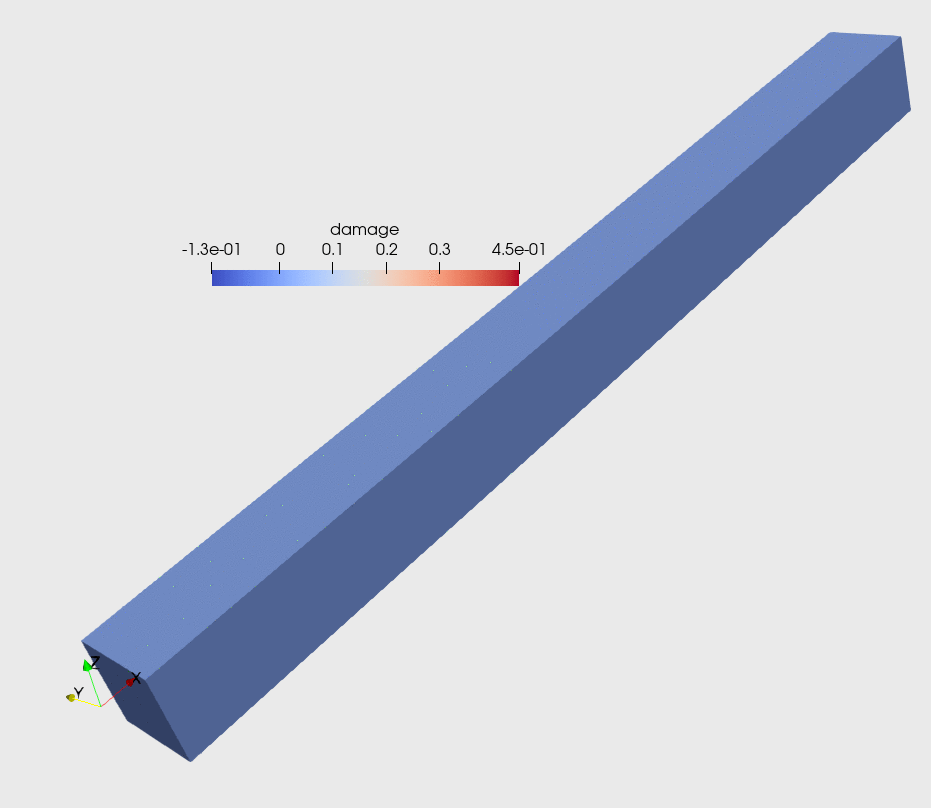

Tutorial 11: Isotropic damage model


using Gridap
using LinearAlgebraModel definition
Elastic branch
const E = 3.0e10 # Pa
const ν = 0.3 # dim-less
const λ = (E*ν)/((1+ν)*(1-2*ν))
const μ = E/(2*(1+ν))
σe(ε) = λ*tr(ε)*one(ε) + 2*μ*ε # Pa
τ(ε) = sqrt(ε ⊙ σe(ε)) # Pa^(1/2)Damage
const σ_u = 4.0e5 # Pa
const r_0 = σ_u / sqrt(E) # Pa^(1/2)
const H = 0.5 # dim-less
function d(r)
1 - q(r)/r
end
function q(r)
r_0 + H*(r-r_0)
endUpdate of the state variables
function new_state(r_in,d_in,ε_in)
τ_in = τ(ε_in)
if τ_in <= r_in
r_out = r_in
d_out = d_in
damaged = false
else
r_out = τ_in
d_out = d(r_out)
damaged = true
end
damaged, r_out, d_out
endConstitutive law and its linearization
function σ(ε_in,r_in,d_in)
_, _, d_out = new_state(r_in,d_in,ε_in)
(1-d_out)*σe(ε_in)
end
function dσ(dε_in,ε_in,state)
damaged, r_out, d_out = state
if ! damaged
return (1-d_out)*σe(dε_in)
else
c_inc = ((q(r_out) - H*r_out)*(σe(ε_in) ⊙ dε_in))/(r_out^3)
return (1-d_out)*σe(dε_in) - c_inc*σe(ε_in)
end
endmax dead load
const b_max = VectorValue(0.0,0.0,-(9.81*2.5e3))L2 projection
form Gauss points to a Lagrangian piece-wise discontinuous space
function project(q,model,dΩ,order)
reffe = ReferenceFE(lagrangian,Float64,order)
V = FESpace(model,reffe,conformity=:L2)
a(u,v) = ∫( u*v )*dΩ
l(v) = ∫( v*q )*dΩ
op = AffineFEOperator(a,l,V,V)
qh = solve(op)
qh
endMain function
function main(;n,nsteps)
r = 12
domain = (0,r,0,1,0,1)
partition = (r*n,n,n)
model = CartesianDiscreteModel(domain,partition)
labeling = get_face_labeling(model)
add_tag_from_tags!(labeling,"supportA",[1,3,5,7,13,15,17,19,25])
add_tag_from_tags!(labeling,"supportB",[2,4,6,8,14,16,18,20,26])
add_tag_from_tags!(labeling,"supports",["supportA","supportB"])
order = 1
reffe = ReferenceFE(lagrangian,VectorValue{3,Float64},order)
V = TestFESpace(model,reffe,labels=labeling,dirichlet_tags=["supports"])
U = TrialFESpace(V)
degree = 2*order
Ω = Triangulation(model)
dΩ = Measure(Ω,degree)
r = CellState(r_0,dΩ)
d = CellState(0.0,dΩ)
nls = NLSolver(show_trace=true, method=:newton)
solver = FESolver(nls)
function step(uh_in,factor,cache)
b = factor*b_max
res(u,v) = ∫( ε(v) ⊙ (σ∘(ε(u),r,d)) - v⋅b )*dΩ
jac(u,du,v) = ∫( ε(v) ⊙ (dσ∘(ε(du),ε(u),new_state∘(r,d,ε(u)))) )*dΩ
op = FEOperator(res,jac,U,V)
uh_out, cache = solve!(uh_in,solver,op,cache)
update_state!(new_state,r,d,ε(uh_out))
uh_out, cache
end
factors = collect(1:nsteps)*(1/nsteps)
uh = zero(V)
cache = nothing
mkpath("output_path")
for (istep,factor) in enumerate(factors)
println("\n+++ Solving for load factor $factor in step $istep of $nsteps +++\n")
uh,cache = step(uh,factor,cache)
dh = project(d,model,dΩ,order)
rh = project(r,model,dΩ,order)
writevtk(
Ω,"output_path/results_$(lpad(istep,3,'0'))",
cellfields=["uh"=>uh,"epsi"=>ε(uh),"damage"=>dh,
"threshold"=>rh,"sigma_elast"=>σe∘ε(uh)])
end
endRun!
main(n=6,nsteps=20)Results
Animation of the load history using for main(n=8,nsteps=30)

This page was generated using Literate.jl.